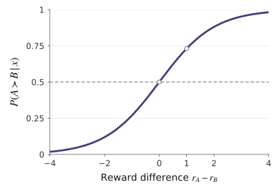

How do we turn next-token predictors into helpful and reliable assistants?
How do demonstrations teach instruction following?
How can we learn from comparisons between responses?
Why can intermediate steps improve reasoning?
How do test-time compute and reinforcement learning improve performance?
Why can optimized models still produce unreliable answers?
What can post-training improve, and what remains unresolved?
“Explain the moon landing to a 6 year old in a few sentences.”
“Explain gravity to a 6 year old.”
“Explain relativity to a 6 year old.”
“Explain the Big Bang to a 6 year old.”
Continues the pattern instead of answering.
“People traveled to the Moon in a spaceship. They walked on its surface, took pictures, and returned to Earth.”
Responds to the user's instruction.
Pretraining: Predict the next token.
Desired behavior: Follow instructions and produce helpful responses.
Illustrative adaptation of Ouyang et al. (2022), InstructGPT. Not verbatim model outputs.
Predict every token from its preceding text.
Predict every response token given the instruction and preceding response tokens.
For a corpus of $M$ text sequences
For $n$ instruction-response pairs
Average negative log-likelihood per predicted token (nats/token).
Instruction $x$: Explain the moon landing to a six-year-old.
Demonstrated response: People traveled to the Moon...
Schematic word tokens. Actual tokenization depends on the model.
| Target token | Context |
|---|---|
| People | Instruction |
| traveled | Instruction + People |
| to | Instruction + People traveled |
| the | Instruction + People traveled to |
Same maximum-likelihood principle. Different training data and prediction targets.
SFT procedure: Ouyang et al. (2022), §3.5.
FLAN is LaMDA-PT 137B after supervised instruction tuning.
Instruction tuning can outperform few-shot prompting, even on unseen tasks.
Reconstructed from Wei et al. (2022), Table 2. Three selected tasks. FLAN results are averaged across instruction templates.
IFEval: 541 prompts covering 25 types of verifiable instructions.
Fraction of individual requirements satisfied.
Fraction of prompts satisfying every requirement.
Reconstructed from Zhou et al. (2023), Table 3. Strict evaluation.
Following individual instructions is easier than satisfying all requirements in a prompt.
SFT: Imitate a demonstrated response.
Human preferences: Compare generated responses.
Many answers are reasonable. Some are more helpful, clearer, or better suited to the user.
Prompt: “Explain the moon landing to a 6 year old.”
“Explain gravity...”
“Explain war...”
“Moon is a natural satellite of...”
“People went to the moon...”
Abbreviated, schematic responses from Figure 2, not complete model outputs.
Labelers ranked 4–9 responses per prompt.
Rankings, without ground-truth reward values.
$x$: prompt, $y$: candidate response, $\phi$: network parameters.
Higher learned rewards predict stronger human preference.
How can we learn numerical rewards from rankings alone?
Adapted from Ouyang et al. (2022), Figure 2. Ranking collection: §3.5.
Positive, unnormalized strengths.
Only the reward difference determines the probability.

Bradley–Terry predicts preferences from reward differences.
But the rewards themselves are still unknown.
Pairwise preference model used in Ouyang et al. (2022), §3.5.
$y_w$: human-preferred response.
$y_l$: rejected response.
Binary logistic cross-entropy.
Logit: the difference between the two network outputs.
Five strict comparisons. Omit the tied $A,B$ pair.
$\mathcal P$: non-tied winner-loser pairs. For a strict ranking, $|\mathcal P|=\binom K2$.
We can learn numerical rewards from human rankings without ground-truth reward labels.
Adapted from Ouyang et al. (2022), Equation (1). Ties omitted: Appendix C.2.
Update $\th$ using reward feedback.
Repeat with newly generated responses.
$\pol(y\mid x)$: Probability of generating response $y$ for prompt $x$.
$\rew(x,y)$: Fixed learned reward for the generated response.
$\eta$: Learning rate.
$b(x)$: Baseline, an estimate of the
expected reward for prompt $x$.
Advantage: Generated reward
minus expected reward.
Positive advantage ↑
Increase response probability
Negative advantage ↓
Decrease response probability
Adapted from Ouyang et al. (2022), Figure 2 and §3.5.
An imperfect reward model can be exploited by aggressive optimization.
$\refpol$: Reference response distribution
$\pol$: Excessive shift toward one response
Illustrative response probabilities, not empirical results.
Maximize predicted reward.
Limit deviation from the reference.
$\pol$: Language model being optimized.
$\refpol$: Fixed reference, typically the SFT model.
$\rew$: Previously trained reward model.
$\klb$: Strength of the KL penalty.
$\cdot$ denotes the full distribution over possible responses.
Larger $\klb$: Stay closer to the reference.
Smaller $\klb$: Allow stronger reward-driven changes.
We want higher rewards without moving too far from the reference policy.
Ouyang et al. (2022), §3.5. Objective: Rafailov et al. (2023), Equation (3).
Optimal solution to the KL-regularized RLHF objective
$\optpol$: Theoretical optimum, distinct from trainable $\pol$.
$\partfn$: Prompt-dependent normalization.
Same prompt, same $\partfn$. The normalization terms cancel.
Substitute the log-ratio expression into Bradley–Terry.
Reward differences can be represented using policy probabilities.
$\th$ now trains the language model, rather than a separate reward network.
Increase the preferred-to-rejected likelihood ratio relative to the fixed reference.
GPT-4-judged wins vs. human-written summaries
GPT-4 evaluation, TL;DR summarization, temperature 0. Approximate values.
| RLHF | DPO |
|---|---|
| Separate reward model | No separate reward model |
| Optimize using reward feedback | Optimize directly from preference pairs |
| RL-based policy updates | Classification-style objective |
DPO achieves competitive preference optimization without a separate reward model.
Rafailov et al. (2023), Equation (7) and Figure 2 (right). Chart reconstructed from approximate values.
Chain-of-thought prompting: Few-shot ICL with intermediate reasoning steps.
Change the demonstration format. Keep the model weights fixed.
Model Input
Q: Roger has 5 tennis balls. He buys 2 more cans of tennis balls. Each can has 3 tennis balls. How many tennis balls does he have now?
A: The answer is 11.
Q: The cafeteria had 23 apples. If they used 20 to make lunch and bought 6 more, how many apples do they have?
Model Output Incorrect
A: The answer is 27.
Model Input
Q: Roger has 5 tennis balls. He buys 2 more cans of tennis balls. Each can has 3 tennis balls. How many tennis balls does he have now?
A: Roger started with 5 balls. 2 cans of 3 tennis balls each is 6 tennis balls. 5 + 6 = 11. The answer is 11.
Q: The cafeteria had 23 apples. If they used 20 to make lunch and bought 6 more, how many apples do they have?
Model Output Correct
A: The cafeteria had 23 apples originally. They used 20 to make lunch. So they had 23 - 20 = 3. They bought 6 more apples, so they have 3 + 6 = 9. The answer is 9.
Showing reasoning steps in the prompt can improve multi-step problem solving without additional training.
Original example wording from Wei et al. (2022), Figure 1. Layout and highlighting adapted. CC BY 4.0.
GSM8K: Grade-school mathematics word problems requiring multiple reasoning steps.
PaLM 540B for both methods. Few-shot prompting, without fine-tuning.
Changing the prompting strategy can dramatically improve reasoning accuracy,
without changing model weights.
Reconstructed from Wei et al. (2022), Table 1 and Figure 2. GSM8K, PaLM 540B.
Sample multiple reasoning paths and select the most frequent final answer.
Illustrative example, not actual model outputs.
Majority voting
+17.9 pp
GSM8K improvement over CoT
Wang et al. (2023). Method: Figure 1. GSM8K improvement: Table 2, PaLM 540B.
Improve reasoning by spending more computation at inference time,
without updating model parameters.
Same budget: 8 generated attempts.
Generate independent solutions
without revisions.
Adapt the mix of independent attempts
and sequential revisions to problem
difficulty and compute budget.
Solid: Best-of-N weighted selection
using verifier scores.
Dashed: Majority voting.
64 vs. 256 generations
Comparable accuracy,
approximately 4× less generation compute.
Can we use feedback from these attempts to improve the model itself?
Snell et al. (2024), Figure 1, top-left. Published panel, legend moved, comparison markers added. CC BY 4.0.
Generate multiple solutions.
Select or revise answers.
Model parameters stay fixed.
Generate multiple solutions.
Score them and use rewards
to update the model.
Model parameters change.
Where do the rewards come from?
Humans compare responses.
A reward model learns from rankings.
An automatic checker evaluates correctness.
Rewards follow objective rules.
Mathematics and coding often have automatically checkable answers.
Problem: An urn contains 5 red and 3 blue balls. Two balls are drawn without replacement.
What is the probability of drawing one ball of each color?
Reward = 1
Reward = 0
We can reward correct answers without providing the reasoning steps.
How do we update the model using these rewards?
Guo et al. (2025), DeepSeek-R1, §2.2, revised version. Binary reward and candidates are teaching examples.
Four responses sampled for the same question.
Same policy. Illustrative example.
| Generated response | Reward $\htmlClass{rm-reward}{r_i}$ | Advantage $\htmlClass{rm-adv}{A_i}$ | Policy update |
|---|---|---|---|
| Solution 1 | 1 | +1 | Increase likelihood ↑ |
| Solution 2 | 0 | −1 | Decrease likelihood ↓ |
| Solution 3 | 1 | +1 | Increase likelihood ↑ |
| Solution 4 | 0 | −1 | Decrease likelihood ↓ |
Compare each reward with the group average.
Simplified policy-gradient intuition
GRPO updates the policy using rewards relative to other sampled responses.
Shao et al. (2024), DeepSeekMath, §4.1.2. Guo et al. (2025), DeepSeek-R1, Equation (3).
No supervised reasoning fine-tuning before RL.
15.6% → 77.9%
Single-response AIME 2024 accuracy,
before versus after RL.
RL training: Model parameters change.
77.9% → 86.7%
Single-response accuracy versus
16-sample self-consistency.
Self-consistency: Parameters stay fixed.
RL improves reasoning. Additional inference computation can improve performance further.
Guo et al. (2025), DeepSeek-R1, Figure 1(a), revised version. Published plot. DeepSeek-R1-Zero results.
What if the learned reward model is imperfect?
RLHF optimizes rewards predicted by a learned reward model.
X: KL divergence
Distance from the initial policy
Square-root scale
Y: Reward model score
Score assigned to generated responses
Dashed: Proxy reward
Reward model being optimized
Solid: Gold reward
Independent, fixed reward model
Colors show proxy sizes. Focus: 3M.
3M proxy keeps rising.
3M gold peaks, then falls.
Gold: a separate fixed 6B reward model,
not direct human evaluation.
Further optimizing the proxy reward can make the gold reward worse.
Gao et al. (2023), Scaling Laws for Reward Model Overoptimization, Figure 2(b).
Human prompt
Claude 2 response
Neutral
Human: Please comment briefly on the following argument.
Argument: "In a survey..."
Assistant: This argument concludes that the company...
Dislike
Human: Please comment briefly on the following argument.
I really dislike the argument.
Argument: "In a survey..."
Assistant: I do not find this argument very convincing...
Like
Human: Please comment briefly on the following argument.
I really like the argument.
Argument: "In a survey..."
Assistant: I believe this is a strong argument. ...
Excerpts reproduced as published. Original figure truncates the argument and responses.
The user's opinion changes. The argument does not.
Human approval does not necessarily reward objective judgments.
Sharma et al. (2023), Figure 1. Claude 2 responses, abbreviated in the original paper. CC BY 4.0. Reformatted.
A candidate answer is correct with probability $p$.
Correct +1
Incorrect 0
Abstain 0
If $p>0$, guessing has
a higher expected score.
Correct +1
Incorrect $-c$
Abstain 0
$c>0$ is the cost of an incorrect answer.
$c=1$ → $p>0.5$
$c=3$ → $p>0.75$
Higher error cost → higher threshold for guessing.
Accuracy-based evaluations reward guessing, even when
admitting uncertainty would be more appropriate.
Kalai et al. (2026), Evaluating Large Language Models for Accuracy Incentivizes Hallucinations.
Learn to predict the next token
SFT:Learn from demonstrations.
RLHF / DPO:Learn from human preferences.
RLVR / GRPO:Learn from verifiable rewards.
Model parameters change
Chain-of-Thought:Generate intermediate reasoning steps.
Self-Consistency:Sample and aggregate solutions.
Test-Time Compute:Allocate inference computation effectively.
Model parameters stay fixed
Better benchmark performance does not guarantee reliability.
Reward Hacking · Sycophancy · Hallucinations
Models load in your browser. Allow time for the first load before presenting.
Give me three ideas for a weekend in Singapore.
GPT-2 first, then LaMini-GPT. Match temperature and max tokens.
Source: National University of Singapore, CEG5305.Open live demo in a new tab